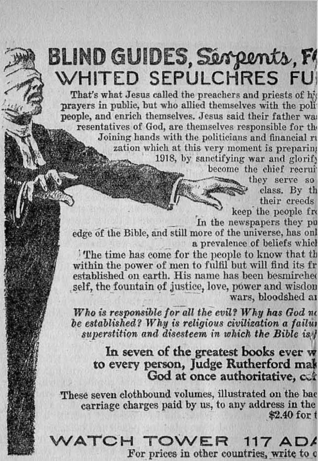
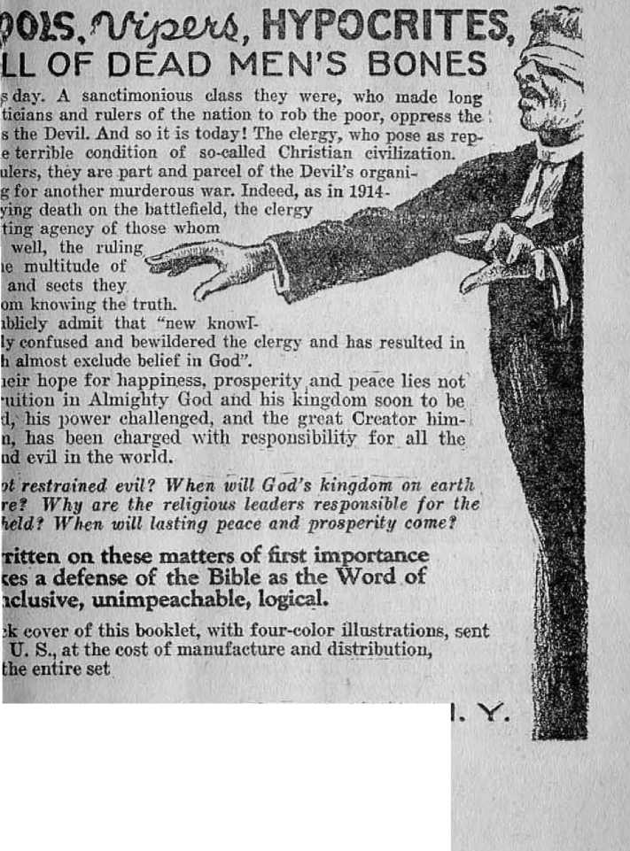
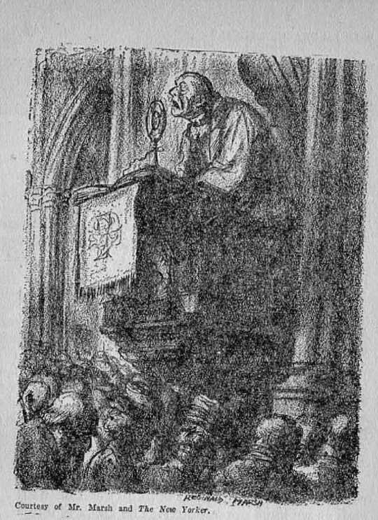
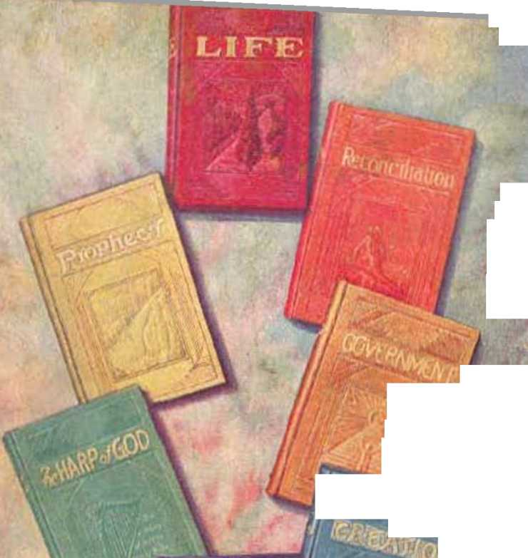

<J. & Rutherford
The Harp of God, Deliverance, Creation, Reconciliation,Government, Life and Prophecy are some of Judge Rutherfordjs writings. His books are published in as many as 33 languages.Their combined circulation exceeds 70,000,000 copies.
Made in U.S.A.
Copyrighted 1930 by the International Bible Students Association
Publisher:
Watch Tower Bible &Tract Society
Brooklyn, New YbrK.U. S. A..
London, Toronto. Strathfield,Capetown, Berhe, Magdeburg
FOREWORD
YO U w ft. n t peace!
How will you get it? Before 1914 the peace prophets claimed there would never be another war. What do you hear them saying now since (he Paris Peace Pact? What does God’s prophetic Word toll you about it? By reading what the author has to say in the following pages you will be able to find pence of mind on this momentous question.
fl'iie Publishers
A GREAT feast was made by Colonel Tobiah Hannibal in his palatial home. The occasion was the celebration of the successful consolidation of ten financial corporations into one giant commercial machine. Colonel Hannibal had piloted the ten corporations into one harbor. He had brought together his guests who would pay honor to him in recognition of his unusual ability. Already a man of power, the great combine just formed had increased his power more than tenfold.
The colonel is a son of the late Reverend Orlando Hannibal, a rector of sagacity and outward piety who brought up iiis son in strict conformity to his creed. Unassuming and modest in his deportment, calm in speech and quick in action, Colonel Hannibal has the capacity to outwit his opponent and to successfully drive the hardest of bargains. He is a man who naturally exerts power over others. An ordinary man quails in his presence when lie meets the piercing gaze of the colonel's steel-grey eyes. He is a Icing of finance of the highest rank. Being astute and unscrupulous he gathers about him men that serve him and do his bidding. Even at the feast of hilarity he selects his guests with a view to accomplishing some sellish purpose. He always pays well in the coin of the realm.
At the bidding of Colonel Hannibal there came to his palace men and women of note and distinction. There were college professors, keen and wily politicians, able and distinguished lawyers, bailiffs, sheriffs and judges, suave clergymen and wise-appearing doctors, and a goodly number of brainless ones to make the noise and do the entertaining. Among the distinguished guests was Mr. Edmund Alexander, personal counsel of the financial king. Also the Reverend Doctor Sanballat, pastor of Colonel Hannibal's church, and of course his spiritual adviser. The Reverend Doctor Sanballat occupied the most prominent seat at the feast, thereby lending piety and dignity to the occasion.
Dinner was finished. The spacious ballroom was glowing with light and jewels and filled with chatter ami jazz. Most of the invited guests were there. Colonel Hannibal, his personal counsel, Mr. Edmund Alexander, and his spiritual adviser, the Reverend Doctor Sanballat, together with a few .satellites, had retired to the library for a smoke and consultation. Again taking the center of the stage and assuming an air of heavy dignity and with pompous and well modulated speech the Reverend Doctor Sanballat, addressing his employer, said:
“Well, Colonel Hannibal, your splendid success in consolidating so many mighty financial organizations will doubtless result in great benefit to the people, and I opine it will prevent financial panics and will be a further guarantee against war, if there need be any further assurance. The public is greatly indebted to you, sir.”
With modesty Colonel Hannibal replied: ‘■'Thank you, Doctor. I hope there will be no more financial panics, but as to future wars you are better qualified than I to express an opinion on that question. I look to you for spiritual advice. For a long while I have heard men preach concerning peace on earth and good will toward men. When, Doctor, may we expect to experience that happy condition?”
Dr. Sanballat: Why, Colonel Hannibal, that is now practically an accomplished fact. We are making such stupendous strides that I am sure war belongs to the past and peace has come to stay and soon the mental and moral achievements of man will robe this earth in God's glory. Then we shall be ready for Christ to come again to earth. Mark the great progress we have made in the last decade. There stands to our credit the League of Nations, that mighty compact sponsored by the Federation of Churches and ably and successfully supported by the statesmen and financiers of the world. We have the World Cour t, in which all international disputes will henceforth be adjusted. We have the General Pact for the Renunciation of War, that incomparable document which had its birth in the Christian land of America, supported by the combined strength of all the churches, and endorsed by all the Christian nations of the world. Other nations which do not claim to be Christian, such as Japan, China, Persia and Turkey, have come forward and put their endorsement upon this matchless treaty for universal peace. Our churches in America con-
ducted a splendid campaign of propagandism to induce the American people to understand how necessary it is for all Christians to support this treaty for peace, and the churches had much to do with influencing the United States Senate to give its ratification of that treaty. I tell you, gentlemen, it is a great document. Nothing like it has ever been brought forth in the history of the world. Christian nations, led by the ardent church workers, have gained a victory for Christ. I say to you, Colonel, and all of you gentlemen, we have readied that happy milestone on our way to eternal glory when and where we can sense indeed the angelic anthem of peace on earth and good will toward men. And now we are progressing in cleaning up the world. Soon we shall succeed in making all the world bone-dry, even if it must be done with the shotgun. When we have thus cleansed the earth, and then with the united support of such men as you, Colonel Hannibal, and your able and trustworthy allies, we shall have made this world an ideal place in which to live. Then if you please, gentlemen, when this earth is thus robed in God’s glory by the mental and moral achievements of men, and particularly that of the churches and. their clergymen, we may invite Christ to come again.
The Reverend Doctor Sanballat, having delivered himself of that matchless piece of oratory, lit a cigarette and leisurely sat back in an easy chair to meditate upon his discourse and to congratulate himself upon the applause that he had received from the satellites who had
Xtje^same
olt*®?- hope
fCan fljetjG) cure
UK sue thousand years CLERGY , C h"0 , to establish a government
on earth that would bring peace, prosperity and contentment; but what a mess they continue to make! BIG BUSINESS Before 1914 men boasted that modem civilization had made war impossible. And now, ten years after the most murderous of all wars, the whole world is again an armed camp.
Why si this?
Who or what is responsible?
Will permanent peace ever come?
Is there any hope of justice, liberty and happiness for the people?
Read Judge Rutherford’s answers to these questions in his new book,
OE presents undeniable proof that we are on the verge of the most glorious time this old world has ever seen. No more wars! No armies! No navies! No politics! No diplomacy! No graft! No unjust taxes! No poor! No rich! No injustice! But, on the contrary, peace, health, liberty, happiness, life; the desire of every honest heart.
GOVERNMENT, with its many colored illustrations, clothbound, gold stamped and embossed, will be sent anytvAenr on receipt of 40c.
Watch Tower 117 Adams St. Brooklyn, N.Y.
For price* iu other eomilries» write our aHkw Ibtiv. Thu H»l b on the test page-
listened with mouths wide open. Colonel Hannibal and his counsel, Mr. Edmund Alexander, did not join in the applause. After a few moments’ silence Colonel Hannibal quietly said:
"Doctor, you know that I have great respect for your opinion because I know you are learned in the ways of men. My father was a clergyman and I have always given much consideration to the opinions of men of the ministerial profession. The political atmosphere of the world is more or less disturbed just now and there are what seem to be many war clouds gathering. I therefore venture to propound to you a pointed question. Is it your opinion, Doctor, that there will never be another World War?”
"Colonel Hannibal,” replied the Doctor, “I answer that question without hesitation. I will stake my reputation upon the positive assertion that there will never be another war or trouble in this world that will even be comparable with what we have had in the past. In fact, sir, I most emphatically state that there will be no more great wars. We have reached the state of peace because the churches are solidly back of the peace movements. You may rest assured of that, sir.”
■ The dignified and shrewd lawyer, Mr. Edmund Alexander, with calmness said: "Colonel Hannibal, with your permission and with the permission of Doctor Sanballat I should like to propound to you both some questions bearing upon the matter of war and peace.”
Doctor Sanballat: Ha, ha, ha! Colonel, you choose your aides with wisdom. Mr. Edmund Alexander, the defender of men and property, which his name implies, is looking after your interests. I am sure his questions will be interesting and illuminating.
“Mr. Alexander,” said Colonel Hannibal, "is an able and faithful counselor May we hear your questions, Mr. Alexander?”
Alexander: In order to lay the foundation for some questions which I shall ask presently I first desire to propound a few questions to you, Doctor Sanballat, which I hope will not be considered offensive or even too personal. You are an ordained clergyman, or, otherwise designated a preacher of the gospel, and my first question is, Do you believe there is a Supreme Being we call God?
Doctor Sanballat: Why, yes, yes, to be sure, I do believe that. A clergyman, you know, is the representative of God on earth, and of course I believe in the existence of the Supreme Being. If I did not I should appear rather inconsistent. But, Mr. Alexander, are you going into theology?
Alexander: No; as I remarked, I desire to ask some preliminary questions in order to lay the foundation for other important questions. My next is, Who is God? Doctor Sanballat.
Answer: Why, sir, God is the great First Cause. He is the Eternal One. The Bible says of him that he is the Creator of heaven and earth. •
Question: You mention the Bible. What do you understand the Bible to be?
Ansiver: The Bible, sir, is generally considered to be the Word of God. The Bible of Jesus and his disciples was the Old Testament, and the New Testament is a collection of the sacred books of Christians. The entire book we speak of as the Holy Bible.
Question: You speak of Jesus. Who is he?
Answer: Jesus Christ is the Son of God.
Question: Do you believe in God and in Christ Jesus?
Answer: Why, yes, sir. Probably you are familiar with our creed, which reads: "I believe in God, the Father Almighty; and in Jesus Christ, his only Son our Lord.” Wo clergymen subscribe to that creed.
Question: Does Christianity or do Christians accept Jesus as the Son of God? and do Christians believe and accept the statements made by Jesus as the truth and as spoken by him with authority ?
Ansiver; Why, of course, sir. If we were to discard Jesus Christ we should have to discard Christianity. Since he is the Son of God, and since God sent him to earth, we must agree that he spoke with authority.
Question: You stated that the Bible is considered the Word of God. I recall that on one occasion Jesus said concerning the Bible or God's Word: "Thy word is truth.” Do you understand that Jesus then referred to the Bible as the Word of God and that it is the Truth?
Answer.- To be sure, sir. Jesus thus spoke of the Bible as the Truth, and it is understood by our Christian people that it is the Truth. Of course the Bible cannot be understood by any one aside from ordained ministers, such as myself, and the obligation devolves upon us to tell the people what it means. We have devoted our lives to the study of religious matters and it is our privilege to give spiritual advice to our congregations, especially concerning all Biblical matters.
Question: Do the Christian clergymen understand that the Bible is the text book of authority for Christians?
Answer: My word! I do not exactly understand why you are asking these questions which I presume all people living in Christian lands understand. Everybody knows that the Bible is the text book of Christians.
Question: That is exactly the point I wish to establish. We lawyers take the law books of a state or nation as our books of authority. What I want to know is, Do the Christians, that is to say, those who believe and follow the teachings of Christ, take the Bible as the book of final authority upon all questions with which it deals as fully and completely as the lawyers take the law books as their authority1.
Answer: Why, yes, my dear sir. I may say that such is generally understood as the proper and correct statement of the matter.
Question: We must take the law of the land as final upon disputed questions concerning our business in governmental affairs. Can we then with equal certainty rely upon the Bible as the statement of truth and as being the end of all controversy in things that it considers"?
Answer: Well— well— well—-
Question: Let me state it in another form. Would Christians have anything upon which to rely if the Bible were discarded? and if the Bible is the Word of God and is the truth, as stated by Jesus, must it not be accepted as final upon all disputed questions with which it deals? When you stand in your pulpit and preach you read from the Bible. Do you understand then that what you are reading is the truth, and do you intend that your congregation shall accept it as the truth and as the final arbiter of the questions then under consideration?
Answer: Well,— ye-es, that is generally the understanding, to be sure, Mr. Alexander. Of course some of our ministers do not accept the Bible.
Question: How can a man consistently be a preacher and professed teacher of the Bible unless he believes it to be true and does accept it as truth?
Answer: I must agree, sir, that he could hardly be consistent to take any other course. Our Christian people understand that the clergymen believe and teach the Bible. If the people did not so believe, our churches would soon disappear. I am answering your questions, therefore, in what I hope to be a consistent manner.
Question: You believe that there will be no more war, you state. Mr. Lloyd George, formerly the prime minister of Great Britain, does not seem to share your opinion. In a speech delivered by him at Manchester recently he said: “The nations of the world are heading straight for war, not because they want it but because no one has the courage to stop the runaway horse and chariot of war. Unless the nations are prepared soon to accept wholeheartedly the peaceable means of settling disputes God alone could save the world from calamities of a more terrible war than has ever been seen."
Answer: Aye, yes, Mr. Alexander, but I remind you that Mr. Lloyd George also said that the churches must save the world from war, and 1 tell you we are the ones who have the courage to stop the runaway horse and chariot of war. The churches will lift the world out of its present dilemma and bring peace to all the nations.
Question: Colonel Hannibal, I hope you and Doctor Sanballat will not misunderstand me. This is a private conference here between friends. We are all equally interested in our business, social, and religious welfare. It is all right to say that there will be no more trouble, if one feels so disposed, but my training has always led me to look at every side of the question. My duty to you, Colonel Hannibal, is to look after your property and personal interests. You pay me for that, and when I do iny duty I must consider the whole question from an unbiased point of view. No one is more anxious for peace than I, but it would seem very unwise to ignore all evidence on the other side of the question. I must relate to you gentlemen some facts and then I shall be pleased to have Doctor
the preachers and theologians have made of the simplicity and reasonableness of the Bible leachings aboutn™„ mot Ef'aS'3^. /H ■ v^z^e?THE DEVIL
djoe&njt Cicdkctte fu/rri?
W7HAT preacher or priest has ever been able to give logical, common-sense, Scriptural answers to such questions? Not one! On the contrary, their ridiculous ideas about the Devil, his organization, hell, evil spirits, and like subjects have driven millions of honest-hearted searchers after truth to throw the Bible aside as unworthy of consideration by thinking people.
It has remained for Judge Rutherford, the ' lawyer, with mind untrammeled by dusty creeds and theological hocus-pocus, to search out the facts on this subject and present to his readers answers so consistent and reasonable that to them the Bible becomes a new and wonderful book. ,
is worth your time and study, and it is only jyc, postpaid anywhere. Why not write for this interesting book?
Watch Tower 117 Adams St. Brooklyn, N.Y.
For prices In other coontrici, write to our olfices there The li&t is on the fast pogo. Sanballat answer some more questions and explain some matters that have been giving me much concern during the past few days.
Some days ago there came into my office a very bright-appearing young man. He asked to see me, and I received him. When lie entered my office he was unabashed, pleasant and smiling, and deported himself like a gentleman. He was frank and open and apparently honest, and I was inclined to listen to what he had to say. I think he told me that he was a colporteur. By the way, Doctor Sanballat, I understand a colporteur is one who travels about distributing religious books or books concerning the Bible. Is that correct?
Sanballat: That is my understanding of the matter; yes, sir; yes, sir.
Alexander: The young man asked to consult me professionally. He stated that a police officer had stopped him and told him that he could not exhibit or dispose of his books in our city without a license. He wanted my legal opinion on the matter. It became necessary for me to have him tell me what he was doing. His story was very interesting. Thinking that I might have some future use for the information he was imparting I called one of my stenographers and took a full statement from him. I have that statement with me here, and presently 1 am going to read it, with the permission of you gentlemen. The young man cited many passages or texts from the Bible in support of his statements. I have had those passages of Bible texts copied. While it is true that I have attended church from my youth up I am free to admit that I know little or nothing about the Bible except from a literary or historical standpoint. Of course, Doctor Sanballat, you are learned in the Scriptures and you will explain these passages or texts to us, I hope. Since this is a private and personal conference I hope we may each oue of us speak plainly.
Now, Colonel Hannibal, you have heard Doctor Sanballat say that God is the Almighty Eteimal One; that Jesus Christ is his great Son who came to earth and spoke with authority; that the Bible is God's Word of truth and that the Bible is the truth. What Doctor Sanballat has told us concerning the impossibility of more war or trouble seemingly is at variance with the statements in the Scriptures. It’ the Doctor is right, then the Bible is wrong; if the Bible is right and means what it says, then I shall ask Doctor Sanballat to explain the meaning of some passages of Scripture. To me these seem to be very important and such as bear directly now upon the question we are now considering.
Returning now to the young man in my office: He said to me: C!You are aware of the fact that all the world is in a state of uneasiness. The rulers of the nations are in perplexity and the people in distress. The material wealth is greater than ever before, and yet discontent is on the increase. All nations are talking about peace, and the clergymen in particular are telling the people that there is to be no more war, and yet all the nations are arming for war." Of course I knew the statement of the young man to be true. It happened that just a few minutes before he came into my office I had read in one of the daily papers a statement made by a noted statesman of the world, to this effect: “The trouble is that the whole world is again arming itself. The number of bayonets and cannon is constantly increasing, and yet everybody speaks of peace.” To be sure the young man told me nothing new on this point, I was interested to know, however, what connection this had with what he was doing. I said to the young man: “What is your explanation of the cry for peace while all are preparing for war?” And I tell you, gentlemen, his reply was an eye-opener to me. In substance he said: “These things God long ago foretold by his prophets; they were written down in the Bible and must comb to pass some time, and now we are beginning to see the fulfilment of those prophecies.” It was at this stage of our conversation that I called my stenographer, and now I shall ask your permission to read the young man’s statement which I have here.
(Reads the statement)
The World War from 1914 to 1918 was plainly a fulfilment of Bible prophecy. The same prophecy which foretold that War and the period of comparative peace now being enjoyed also tells of a greater trouble that is to follow within a short time. It is described in the Bible as the worst trouble ever known since there was a nation. The Bible gives a full and complete reason for that coming trouble, and if you will bear with me I shall be glad to call your attention to some of the facts; and these facts, together with the Scriptural citations or texts, will enable you to determine whether there is a possibility of the world’s experiencing another great time of trouble or whether we shall now enter into lasting peace.
Alexander: I should like to say here that the young man quoted scripture after scripture right off the reel. I was astounded. Colonel Hannibal, may 1 ask you to provide us with a Bible (I presume you have one in the house), and let us take these Scriptural texts as we go along, and Doctor Sanballat will tell us whether or not there is some better explanation of them.
(A Bible was brought, and Sir. Alexander proceeded to read from the statement which he had.) .
Mr. Alexander, as a lawyer you will appreciate more fully the meaning of my words if you will permit me to mention some things long since past to lay a basis for more direct answer to your question concerning war and peace. These statements have to do with the origin of man and the course he has followed; and I shall endeavor to point out the Scriptural authority supporting the statements that I make, that you may look them up and see whether or not they are true. Since you are making a record of what I am saying, I will cite the scriptures where I don’t quote them.
God, whose name is Jehovah, is the Creator of heaven and earth. (Isa. 42:5) ‘Tor in the Lord Jehovah is everlasting strength." (Isa. 26:4) The beginning of God's creation was the Logos, afterwards called Jesus Christ. (Col. 1:15-17; John 1:14; Prov. 8:22-30) Another perfect and mighty son of God was originally called Lucifer. God created the earth as a place for man’s habitation. (Isa. 45:12,18) He created man in his own image and likeness and made him a perfect creature. (Deut. 32:4; Gen. 1: 2G-28) God called the man Adam and gave to him Iris law, which law required Adam to be obedient to God and provided death as a penalty for the violation of his law. The law reads: Tn the day that thou sinnest, thou shalt surely die.’ Lucifer was in the garden of God, man’s home, being placed there by Jehovah and given the position of overseer of man. Lucifer became ambitious to be like the Almighty Creator and meditated a rebellion against God. Desiring to have the worship of man, which Jehovah enjoyed, Lucifer set about to turn man away from God and to destroy the confidence of all creatures in Jehovah. He reasoned that if man should sin and God should impose upon him the death penalty that would prove to all other creatures that God could not make a man that would be faithful to him, and would also prove that God is not perfect in wisdom nor is his power without limitation. He reasoned that if Adam sinned and God did not kill him, then God would prove himself untrue because not carrying out his own law. In either event all creatures would lose faith and confidence in the Creator and he, Lucifer, having been the one to develop the matter, would receive the worship and glory of man and other creatures. He there-
five words, storting off Genesis, have caused more criticism and
are used more, perhaps, than any other portion of tho Bible iu attempts to discredit it as the Word of God. If there is a single college or university anywhere in which the Bible account of creation is really taught and defended, we do not know of it; if there is any preacher anywhere who honestly believes and can give an explanation of creation consistent with* reason and the facts, we have yet to find out who he is; and, of course,
scientists, who have made themselves famous as jug-S^n mMi°n‘on^ ^u>n’ year periods,
■ / are too puffed up with their own wisdom to give the Scriptures serious consideration.
But, says the Bible, ‘the wisdom of men is fool* ishnesB with God.* How true that is, and how consistent and reasonable the Bible is, will be found clearly explained in Judge Rutherford’s book, CREATION
Here's a book that satisfactorily answers every puzzling question on creation. It will give its readers the thrill of a lifetime.
Clothboimd, 368 pages, many illustrations, mailed anywhere, and it is only 35c.
Watch Tower 117 Adams st. Brooklyn, N.Y.
Fur prices Lu other counlriis, write to our offices there. The list hi on the last page. fore led man into sin. Immediately God sentenced man to death and expelled him from Eden his perfect home. His wisdom and power is so much greater than that of any creature that even Lucifer could not fathom it.—Gen. 3:4-6,15; Ezek. 28:14-18; Isa. 14:12-14; Job 1:7-12; 2:1-5.
Thereafter Lucifer was called Satan, which means opposer of God; also Devil, which means slanderer of God; also Dragon (or Devourer), which means one who attempts to destroy all who obey God; and also Serpent, meaning the one that deceives others. (Bev. 20:1-3) After man was expelled from Eden he begat children. Since that power of procreation was exercised for the first time after he was sentenced to death, and while undergoing .he sentence, it follows that all of his children were sinners and imperfect by inheritance. (Ps. 51: 5) All men, therefore, have been subject to death and have died because of inherited sin. “Wherefore, as by one man sin entered into the world, and death by sin; and so death passed upon all men, for that all have sinned.” (Rom. 5:12) The ultimate result must be that in time all men would die and remain for ever dead. The Scriptures show that God knew from the very beginning what he would do to save mankind and vindicate his own word and name. It is written in the Bible: “Known unto God are all his works, from the beginning of the world.” (Acts 15:18) God had a fixed purpose, and what he purposes he will surely do in his own good time. —Isa. 46: IL
God caused Ins purpose to be written down in his Word, the Bible, but the understanding thereof by men could not be had until God’s due time. His pui-pose, as expressed in the Scriptures and now understood, and which was from the beginning, is to provide redemption of man from death; to set up a government of righteousness in the earth; to awaken the dead and give all men an opportunity to be restored to human perfection and live for ever. He expressed the purpose to produce a “seed" which would be the channel or means of blessing all the families and nations of the earth. (Gen. 12:3; 22:18) He made many pictures which prophetically foretold the coming of this seed. In due time he made it known that the seed of promise is Christ. The name Christ means the anointed servant of Jehovah to carry into operation his purposes.—Gal. 3:16, 27-29.
God expressed his purpose to redeem man, or ransom him from death and the grave. (Iios. 13:14) “Ransom" means an exact corresponding price; and since it was a perfect human creature, Adam, who committed the sin and was sentenced to death and therefore must give up a perfect human life, nothing short of a perfect human life could redeem him. All men being imperfect because descendants of Adam, there was none on the earth to purchase or ransom or redeem mankind. (Ps. 49:7) The love of God made provision. His perfect wisdom carried it out. He provided a substitute for the perfect man Adam in order that Adam and all of his offspring might be redeemed from death.
This perfect substitute was the man Jesus Christ. It is written of him that he was made flesh and dwelt amongst men. (John 1:14) His life was transferred from the spirit to the human nature and he was born as a man child, but without sin because his begetting was not from man but from God. He was the Son of God; therefore it is written: “For God so loved the world, that he gave his only begotten Son, that whosoever believeth in him should not perish, but have everlasting life. For God sent not his Son into the world to condemn the world; but that the world through him might be saved.’' —John 3:16,17.
Jesus reached his legal majority at the age of thirty years, and he was then perfect under the law and in every manner and therefore exactly equal to the perfect man Adam before Adam sinned. He was made a man for the express purpose of becoming the Ransomer of man, to the end that man might have a chance for everlasting life. Jesus said: T came to give my life a ransom.’ (Matt. 20: 28) ‘I am come that they [the people] might have life and have it more abundantly.’ (John 10:10) God could not justly compel Jesus to lay down his life, but it was the will of God that he should become man’s Redeemer and Jesus was perfectly willing that it should be thus. “Therefore doth my Father love me, because I lay down my life, that I might take it again. No man taketh it from me, but I lay it down of myself. I have power o lay it down, and I have power to take it again. This commandment have I received of my Father.” (John 10:17,18) The perfect man Jesus was put to death, and his death was for the benefit of mankind, because it is written: “But we see Jesus, who was made a little lower than the angels, for the suffering of death, crowned with glory and honour; that he by the grace of God should taste death fox* every man.” (Heb. 2:9) “For this is good and acceptable in the sight of God our Saviour; who will have all men to be saved, and to come unto the knowledge of the truth. For there is one God, and one mediator between God and men, the man Christ: Jesus; ■who gave himself a ransom for all, to be testified in due time."—1 Tim. 2: 3-6.
God raised Jesus up ont of death and then Jesus Christ the divine ascended into heaven to continue to carry out God’s purposes. (Acts 10: 38-40; Heb. 9: 24) God could have destroyed Satan the Devil, to be sure; but it pleased him to permit the Devil to go his limit in wickedness, and in due time, as stated in the Bible, he will destroy Satan and his wicked works. He committed to Jesus all power in heaven and in earth to carry out his purposes (Matt. 28:18), and in due time Christ Jesus will be the active One to destroy Satan and his power. Jesus Christ must wait, however, until God’s due time to carry this purpose into operation.—Ps. 110:1, 2.
The chief doctrine taught by Jesus was concerning God and his kingdom which he will establish in the future and in which kingdom Christ Jesus is the King. He taught his disciples to always pray for the coming of that kingdom that the vail of God might be done on earth even
I n six of his notable works, The Harp cf Ga/, Ratneitiatien, Where are the Dead? Our Lor ft Reiitrn, Oppres-
satisfnetory basis for it Many through-lv out the ages have been the attempts Hjjbi) of men to solvo the mystery, to pre-®ffiLsent some tangible solution, but Sjs&$. l the paramount question still in the minds of all thinking people is,
What intelligent person is there in the whole world HkWA ^W3 u°t often wonder about this matter of life beyond the grave? The fact that there is “* the human heart a hope of future life argues that there must be some logical,
- Where are |the Dead, ^and what is their G) hope f
jien, and Judgment, J udge Rutherford gives US an explanation of the subject of the resurrection, so amazingly simple, harmonious, and consistent with reason, that rec arc made to wonder why there ever has been any question about it.
THE HARP OF GOD, 384 pages,clothbound
WHERE ARE THE DEAD? 64 pages
All for $1.00
Write us, enclosing a dollar bill; mention these six and we will send them anywhere, postpaid
Watch Tower 117 Adams St. Brooklyn, N.Y.
For prices in other countries, write to our offices there. The list is on the list page. as it is in Heaven. (Matt. 6:10) All his parables related to that coming kingdom. He promised that he would come a second time and set up his kingdom on earth, and that then both the living and the dead should he given a judgment and an opportunity for life.—John 14:1-5; 5:29,30; 2 Tim. 4:1.
Left to his own wicked course Satan became the god or invisible ruler of all the nations of the world. Only a few men have been really devoted to Jehovah, and they refuse to do Satan’s bidding. The purpose of Satan has been to blind the people to the truth of God’s Word and turn them away from Jehovah, and Satan has therefore been designated in the Scriptures as the god or prince of this world. (John 14: 30; 2 Cor. 4:3,4) God has expressed his purpose, however, that in his own due time he wall vindicate his word and his name before all creation and prove to all creation that he is the Almighty One.
God made a covenant with the Israelites and they were the recipients of his special favor. For their good he commanded that they should have no other God besides himself. Since he permits his creatures to take their choice, the Israelites fell away from God, were overreached by Satan the Devil, and lost Jehovah’s favor. It was in the year 606 B.C. when God permitted Israel to be completely overthrown, and it was then and there that he indicated that the period of the Gentile dominion on earth would be 2,520 years. That meant, of course, that Satan would continue without interruption to be the god of this world until he should come whose right it is to rule. (Ezek. 21:26,27) That One whose right it is to rule is Jesus Christ.
The period of the Gentiles of 2,520 years ended in the latter part of 1914 A.D. That would mark the time when the rule of Satan without interruption or hindrance would cease, and would mark the beginning of the activities of Christ Jesus as God's active agent against Satan. Jesus had repeatedly told his disciples that he would come again at the end of the world and that then his kingdom would begin. For this reason his disciples propounded to Jesus the question: ‘What shall be the sign [proof] of thy presence and the end of the world?’ (Matt. 24: 3) Knowing that Jesus spoke with authority and that his word is true, his answer to their question is of great importance. In substance he answered that the time would be marked by a world war, in which nation would rise against nation and kingdom against kingdom, and that this period would be immediately followed by distress and perplexity amongst the nations. (Matt. 24:7-12; Luke 21: 26) According to the Bible method of reckoning time the year ends in the autumn season. Exactly 2,520 years after the overthrow of Israel, and therefore exactly on time, to wit, in the fall of the year 1914, came the great World War. Never before was there anything like it. All Christendom was involved. It was a war in fulfilment of the prophecy spoken by Jesus, showing the end of the world and the beginning of the activities by Christ Jesus against Satan the Devil.
Prophecy is never understood until it is in course of fulfilment, and seldom understood until it has been fulfilled. When we see that those prophetic words of Jesus have been fulfilled, and knowing that he spoke with authority, we should give full credit to all other words uttered by him in answer to the same questions which the disciples propounded concerning the end of the world. That war stopped in 1918, but no one could give a good reason why. The Lord foreknew and foretold the reason.
We know that during the World War various governments prohibited colporteurs and others from distributing Bible information and had many of them put in jail because they had published books explaining the Bible and were distributing these amongst the people. The action of the government was taken, of course, upon the ground that everything must be done to nun the war. In other words, there must be no prophetic explanation of the war while the war was going on. It follows, then, that before there could be a wide testimony concerning the meaning of these Biblical prophecies there must come a time of comparative peace. The war ceased and there has been a period of peace since then for the express purpose of permitting God’s faithful witnesses on earth to tell the people the meaning of prophecy and to explain to them God’s purposes. And now in this connection note the words of Jesus in further answer to the question; (Matt. 24:14) “And this gospel of the kingdom shall be preached in all the world for a witness unto all nations; and then shall the end come.”
What could he mean by the words “this gospel”? Of necessity he must have reference to some specific gospel. At once it is seen that he meant that a message of good news should be given to the people, because “gospel” means good news; and since he had just stated what that message was, to wit, the end of the world, his second coming, the World War and the things attendant thereupon, it would mean the beginning of the manifestation of God’s kingdom in behalf of the people. Jesus says “this gospel” must be preached, and it therefore follows that there must be a time of comparative peace for doing this work of informing the people. In 1918 the Armistice was signed, and peace was agreed upon in 1919. Shortly thereafter there began the widest distribution of Bible instruction ever given by any people on earth. Millions upon millions of books containing an explanation of the Bible have been printed and placed in the hands of the people at a very nominal cost. I am just one of many persons going from place to place to deliver to the people this message and to inform them what is to be expected, as set forth in the Bible.
You will further see that just about the time of the World War the Scriptures describe a war in heaven between Christ Jesus and his angels and the Devil and his angels in which the Devil is cast out of heaven and cast down to the earth. (Rev. 12:1-7) Then this same scripture says: “Woe to the inliabiters of the earth, and of the sea! for the devil is come down unto you, having great wrath, because he knoweth that he hath but a short time.” (Rev. 12:12) It is needless for me to tell you that since the World War there has been more distress and crime than in the history of the world, and at the'same time great preparation for more war, and much talk of peace.
War
Now I will answer your question specifically. There is yet to be the greatest war that has ever come to pass since there was a nation. No human power can now avert that great trouble. The League of Nations, the World Court and the peace pacts will not even delay that time of trouble an hour. When God’s due time comes it will break in all its fury. It is important that the people be told of these facts because God has commanded that they shall be told. That is why we are going about the country telling the people this message of truth. We cannot stop and tell every one the entire story, therefore “this gospel of the kingdom” has been put in book form and w’e take these books to the people and exhibit them and give them an opportunity to have them that they may quietly study these vital questions at home. We take a small sum of money for these books, not for the purpose of making a pecuniary profit, but to help bear the expense in carrying on this work. We are not engaged in a propaganda work, because we do not ask any one to join any organization.
We are seeking only to inform the people of things that they ought to know. We are trying to inform both the rich and the poor. The work is being done, however, not by the rich, but generally by the poor in this world's goods, but who are rich in faith and in God’s Word of truth.
Please give special note to the words of Jesus that ‘this gospel of the kingdom shall be preached as a witness unto all nations, and then the end shall come’. It is manifest then that the period of comparative peace is specially for the purpose of giving to the people this notice concerning God’s kingdom. When that work of so informing the people is done, merely as a witness, then Satan’s rule must come to an end. How is it to end? I answer that it will end with the greatest war or time of trouble ever known and in it the whole world will be involved. In this connection note the words of Jesus: “For then [at the end] shall be great tribulation, such as was not since the beginning of the world to this time, no, nor ever shall be. And except those days should be shortened, there should no flesh be saved: but for the elect’s sake those days shall be shortened.” (Matt. 24:21,22) These words of Jesus show that the trouble not only will be the worst ever known, but will be the last. It is that final conflict to which the Devil is looking forward, and, as stated in Revelation 12:12, he knows that his time is short. What shall follow that trouble will be a period of everlasting peace and blessing for the people. But first I must give you further proof of the coming world war or time of trouble.
Who is responsible for all the evil? Why has God nt be established? Why is religious civilization a failui superstition and disesteem in which the Bible tsj
In seven of the greatest books ever w to every person, Judge Rutherford mall God at once authoritative,
These seven clothbound volumes, illustrated on the bac carriage charges paid by us, to any address in the $2.40 for t
BLIND GUIDES, Ss/tys/nfo, WHITED SEPULCHRES FUI
That's what Jesus called the preachers and priests of hfj prayers in public, but who allied themselves with the poll people, and enrich themselves. Jesus said their father wai resentatives of God, are themselves responsible for tin Joining hands with the politicians and financial n zation which at this very moment is preparin;
1918, by sanctifying war and glorifj become the chief recrui —""thw serve so class. By th their creeds
s& '•j fceep yle peOpie fr(
_ In the newspapers they pu edge of the Bible, and still more of the universe, has on)
gEt a prevalence of beliefs whicl
ew ‘ The time has come for the people, to know that th W within the power of men to fulfil but will find its fr K established on earth. His name has been besmirehet self, the fountain of justice, love, power and wisdou f ' " wars, bloodshed ai
LL OF DEAD MEN’S BONES
p day. A sanctimonious class they were, who made long ticians and rulers of the nation to rob the poor, oppress the s the Devil. And so it is today! The clergy, who pose as rep-e terrible condition of so-called Christian civilization. tilers, they are part and parcel of the Devil’s organi-g for another murderous war. Indeed, as in 1914-ying death on the battlefield, the clergy ting agency of those whom well, the ruling
ie multitude of
and sects they IZ'H
oni knowing the truth. ' ibliely admit that ‘‘new knowl-
ly confused and bewildered the clergy' and has resulted in i h almost exclude belief in God”.
icir hope for happiness, prosperity .and peace lies not ■uition in Almighty God and his kingdom soon to be d, his power challenged, and the great Creator him-n, has been charged with responsibility for all the ud evil in the world.
it restrained evil? When will God's kingdom on earth re? Why are the religious leaders responsible for the fold? When will lasting peace and prosperity come?
ritten on these matters of first importance ces a defense of the Bible as the Word of iclusive, unimpeachable, logical.
•k cover of this booklet, with four-color illustrations, sent U. S., at the cost of manufacture and distribution, the entire set
\MS ST. BROOKLYN, N jut offices there.. The list is on the last page.
It is well known that the clergy are taking the lead in the advocacy of the League of Nations, the World Court, and peace pacts and such like, and are boasting of what they have accomplished and will accomplish.
(Here Doctor Sanballat interrupts to say)
“Your young man is certainly right there. The clergy are proud of the fact that they are bringing peace to the world and preparing for Christ to come.”
Mr. Alexander: May I continue to read what the young man says?
(Reads)
The book of Revelation contains the words Jesus spoke and which words God had told him to speak. In Revelation 16:13,14 it is written: “And I saw three miclean spirits like frogs come out of the mouth of the dragon, and out of the mouth of the beast, and out of the mouth of the false prophet. For they are the spirits of devils, working miracles, which go forth unto the Icings of the earth and of the whole world, to gather them to the battle of that great day of God Almighty.”
Revelation is a book of symbols, that is to say, the truth is expressed in figurative or symbolic language. The unclean spirits there mentioned symbolically represent false or hypocritical representatives of God who are promulgating a wrong doctrine in the name of God and of Christ. They are therefore called unclean. Satan has a great and powerful organization of which he is the god or invisible ruler. (2 Cor. 4:3,4) This is made up of the commercial giants, the political rulers, and. the religious element. Permit me to read a paragraph from this book which I have here, and which is called Prophecy:
The three unclean spirits here mentioned are likened unto frogs. A frog swells up, is bombastic, and boasts of what he is going to do and makes much noise about it. The noise of a bullfrog strikes terror to the mind of one who does not know whence the noise emanates. The Devil has the whole world in fear and distress because his ‘bullfrogs’ are bellowing forth their noise. The “dragon” in the text represents the entire Satanic organization, while the “beast” is symbolic of the visible part of that organization, and the “false prophet” particularly represents the fraudulent religions. With one accord all these elements of Satan’s organization boast and make much noise of what they are doing and are going to do.
In substance they say: ‘The earth is ours, and we are going to fix everything to our liking; and when we get through the people will like it.’ This is but voicing the sentiment of the Devil, who says: “My river [peoples] is mine own, and I have made it for myself.” (Ezek. 29:3) The visible part of the organization makes peace pacts and boldly announces: ‘We have outlawed war and hence there will be no more war, and let the people be assured to that end. ’
Now note the next verse of that chapter in Revelation which reads: “And he gathered them together into a place called in the Hebrew tongue Armageddon. ... And there were voices, and thunders, and lightnings; and there was a great earthquake, such as was not since men were upon the earth, so mighty an earthquake, and so great. And the great city was divided into three parts, and the cities of the nations fell: and great Babylon came in remembrance before God, to give unto her the cup of the wine of the fierceness of his wrath. And every island fled away, and the mountains were not found. And there fell upon men a great hail out of heaven, every stone about the weight of a talent; and men blasphemed God because of the plague of the hail; for the plague thereof was exceeding great.”—Rev. 16:16-21.
Does it not seem to you that there is an invisible power or force that is driving the nations on to prepare for wax* while there is a constant cry of peace? That unseen force is Satan the Devil. Satan is drawing the nations into pacts, leagues.and treaties, and his purpose is to turn all against God. Satan, having been cast out of heaven, knows that the time is short until the final battle will be fought, and his attempt will be to turn all people away from God and, if he cannot have them himself, to destroy them. Jehovah is all-powerful, and when he is ready to act, and sends forth his beloved Son as his active Agent to act, the result will be a victory for God and for Christ. By his prophet he says: “The Lord shall send [forth] the rod of thy strength out of Zion: [saying] Rule thou in the midst of thine enemies. The Lord at thy right hand shall strike through kings in the day of his wrath. He shall judge among the heathen [nations], he shall fill the places with the dead bodies; lie shall wound the heads over many countries.’-—Ps. 110: 2, 5, 6.
The League of Nations is a direct insult to Jehovah, and you will note that the Federal Council of Churches issued a statement in January, 1919, to the effect that the League of Nations is the political expression of God’s kingdom on earth. The boast is that the League of Nations and peace pacts and similar movements will bring lasting peace and prevent further war. But nothing of the kind can prevent war. Concerning such treaties and combines the Lord says: “Associate yourselves, O ye people, and ye shall be broken in pieces; and give ear, all ye of far countries: gird yourselves, and ye shall be broken in pieces; gird yourselves, and ye shall be broken in pieces. Take counsel together, and it shall come to nought; speak the word, and it shall not stand.”—Isa. 8: 9,10.
The great World War is likened unto a stormy wind, and symbolically a stormy wind or whirlwind is often used to represent war. Concerning the oncoming conflict which Jesus says will be the worst ever know, God by his prophet says: “For he commandeth, and raiseth the stormy wind, which lifteth up the waves thereof. They mount up to the heaven, they go down again to the depths: their soul is melted because of trouble. They reel to and fro, and stagger like a drunken man, and are at their wits’ end.” —Ps. 107:25-27.
The clergy claim to represent God, but they iu fact do not represent him. They ignore his way of bringing peace and boastingly say that the church is going to bring it. The preachers or clergymen are called prophets and priests; and concerning peace and war, God by his prophet says: “For from the least of them even unto the greatest of them every one is given to covetousness; and from the prophet even unto the priest every one dealeth falsely. They have healed also the hurt ... of my people slightly, saying, Peace, peace; when there is no peace.*' —Jer. 6:13,14.
Boastingly the clergy say that there is to be no more war because the churches are bringing in peace and safety. By that they mean that the church denominations, which do not.agree amongst themselves as to what the Bible teaches, have now agreed to establish peace on earth, which God alone can do. Concerning their boast the Lord says: <cFor when they shall say, Peace and safety; then sudden destruction cometh upon them, as travail upon a woman with child; and they shall not escape.”—1 Thess. 5:3.
Why is the great trouble impending? Because Jehovah purposes to destroy Satan's organization and his power, that the people may he unhindered in learning the truth. He is permitting the nations to be gathered together and his action shall follow shortly. By his prophet he says: “Therefore wait ye upon me, saith the Lord, until the day that 1 rise up to the prey; for my determination is to gather the nations, that I may assemble the kingdoms, to pour upon them mine indignation, even all my fierce anger: for all the earth shall be devoured with the fire of my jealousy. For then will I turn to the people a pure language, that they may all call upon the name of the Lord, to serve him with one consent.” (Zeph. 3:8, 9) It will thus be seen that peace will come only after the great trouble.
If we believe the Scriptures, which state that Satan is the god or invisible ruler of this world and that the world is ruled, as we know, by the commercial, political and religious elements, then if these same ruling powers could bring in peace would that not be a victory for the Devil? God will establish his government of righteousness and then put Satan and his makeshifts completely out. The word “earth” as often used in the Scriptures symbolically or figuratively represents organized governments or powers of the earth. By his prophet God gives a reason for the destruction of these organizations, and that reason is that they have given themselves over to Satan the Devil. By his prophet he says: “The earth also is defiled under the inhabitants thereof; because they have transgressed the laws, changed the ordinance, broken the everlasting covenant.”— Isa. 24:5.
This book Prophecy which I have here, discussing and giving the Bible explanation for the impending war, among other tilings says this, which I ask you to let me read to you:
Is it because a few men have become possessors of exceeding great riches that God will bring the great war? Surely that is not the reason. Material riches alone are not condemned by the Lord. Solomon was very rich. (3 Chron. 1:12) Jehoshaphat had riches
y In the latest of his notable books in defense of the Bible, !/'( which he rails
Just as surely as the y Bible foretold the greatest of all conflicts to begin in 1914, . just so positively does it prophesy
in detail the marvelously good things that are soon to come. Before these good Wf times, however, there must first take place ' , what the Bible calls God’s
Judge Rutherford presents indisputable proofs that the world stands right on the eve of the performance of God’s strange act and the subsequent establishment of his kingdom on earth.
This book makes intensely interesting reading.
Clothbound, 368 pages, illustrated, sent anywhere for 45 c.
Watch Tower 117 Adams st. Brooklyn, N.Y.
For price* in cthe? countries \rriic Go our cLllce* there. The Iht u on the hut in abundance. (2 Chron. 17:5) Hezekiah had “exceeding much riches”. (2 Chron. 32:27) God did not condemn any of them because of their riehes.
Is the great war impending and about to fall because the political rulers have not ruled the people perfectly? Surely not that. Some one had to rule, and, all men being imperfect, no man could mile perfectly. There have been many men in polities who have honestly done the best they knew how to do. Many of the rich men in polities have used their means to do good.
Then why should this great impending calamity come upon the people and nations of the earth? It is because the people have been turned away from Jehovah God and caused to worship the Devil, and because Jehovah’s holy name has been hypocritically used, thereby bringing reproach upon him and turning the people away from him to their own injury, and therefore turning the people in the way of the Devil and destruction. And who is the most reprehensible and responsible for this condition?
When Christianity, which was organized as a pure organization, began to grow, Satan organized a great commercial and political world power and caused it to adopt the Christian religion in name only, and corrupted the organization known as Christianity and made it a Devil religion. This does not mean that he corrupted the pure Christians, but he corrupted the organization, made it a part of his own organization, and called it “Christian”. It is therefore clearly seen that Babylon is the Devil’s organization, is ‘the mother of all harlots’, and has caused the political rulers and the commercial giants of the earth to commit fornication with her; and thereby all the world powers, made up of political, commercial and religious factors, have brought ignominy and shame and reproach upon the name of Jehovah God. The politicians and the rulers and the commercial giants, who have gathered great riches and honor and power, have been adopted by Satan’s wicked religious system and drawn into his net, and have been made a part of Babylon. . . .
Both the political and the commercial rulers are responsible before God for what wrong they have done, but the most reprehensible and responsible before Jehovah, and who deserve and shall receive the severest punishment, are the religious leaders and the principal ones of the religious flocks.
Doctor Sanballat again interrupts the reading: “That must be one of those pestiferous Bible Students, who are going about the country interfering with our churches, that gave you that statement. We will run them out of the country.”
Mr. Alexander: Doctor Sanballat, I am not reading this as a personal affront to you, but I think I owe it to my client to state all the facts in this personal and private conference. We might remind ourselves that the Constitution of this country guarantees that every man shall exercise his religion in whatsoever manner he desires, and it would be rather inconsistent to try to run anybody out who is discussing or teaching his understanding of the Bible. I have a few more paragraphs here of this statement that I should be pleased to continue with.
Colonel Hannibal: Please proceed, Mr. Alexander.
(Continues reading)
„ All Nations
The clergy, as we all know, claim that America, Groat Britain, Germany, and like nations, are Christian nations and are therefore the true representatives of God on earth. They do not serve God, but they take his name or call themselves by the name of his Christ. Concerning the great approaching war or trouble, Jehovah by his prophet says: “For, lo, I begin to bring evil on the city [organized governments] which is called by my name [Christendom], and should ye be utterly unpunished? Ye shall not be unpunished: for I will call for a sword upon all the inhabitants of the earth, saith the Lord of hosts. Therefore prophesy thou against them all these words, and say unto them, The Lord shall roar from on high, and utter his voice from his holy habitation; he shall mightily roar upon his habitation; he shall give a shout, as they that tread the grapes, against all the inhabitants of the earth. A noise shall come even to the ends of the earth; for the Lord hath a controversy with the nations; he will plead with all flesh; he will give them that are wicked to the sword, saith the Lord. Thus saith the Lord of hosts, Behold, evil shall go forth from nation to nation, and a great whirlwind shall be raised up from the coasts of the earth."—Jet. 25: 29-32.
Not only does the Lord tell of the certainty of the great trouble, but he also describes the effect thereof and further shows that it will be the worst the peoples of earth have ever experienced: “And the slain of the Lord shall be at that day from one end of the earth even unto the other end of the earth: they shall not be lamented, neither gathered, nor buried; they shall be dung upon the ground." (Jer. 25: 33) If a million people should be killed in a few moments in one city, that would strike such terror in the hearts of the remaining ones that no one would stay to bury the dead. The Scriptures indicate it will be even worse than that.
It will be conceded by all that the clergy are the shepherds of the flocks and speak of their congregations in that way. They call themselves shepherds. God foreknew that they would do so, and he foretold how he is displeased with those who claim to serve him but do not. The principal ones of their flocks are the rich and influential of the community. The Lord’s prophet says concerning such: “Howl, ye shepherds, and cry; and wallow yourselves in the ashes, ye principal of the flock: for the days of your slaughter and of your dispersions are accomplished; and ye shall fall like a pleasant vessel. And the shepherds shall have no way to flee, nor the principal of the flock to escape. A voice of the cry of the shepherds, and an howling of the principal of the flock, shall be heard; for the Lord hath spoiled their pasture. And the peaceable habitations are cut down, because of the fierce anger of the Lord." —Jer. 25:34-37.
Christendom, so called, is a boastful organization and likens itself unto that which is pleasant and desirable, and Jehovah says it shall fall like a pleasant vessel. When one drops a pleasant or beautiful vessel and shatters it to pieces there is much distress.
God’s expressed purpose is that in his own proper time every man shall be given the truth, that he may act intelligently and choose whom he will desire to serve and obey. In 1 Timothy 2: 3,4 it is written: “For this is good and acceptable in the sight of God our Saviour; who will have all men to be saved, and to come unto the knowledge of the truth.” The policy of Satan the Devil is always to keep the people in ignorance of Jehovah God and his purposes and he uses all men that he can to turn the common people away from Jehovah the only true God. For this reason Satan blinds the people to the truth. Everything in the Scriptures points to the fact that Jehovah’s day is at hand when he will make it possible for all to have an understanding of the truth who desire; and in order that they might know the truth he will destroy Satan’s organization. When Jesus said for man’s benefit, “This is life eternal, that they might know thee the only true God, and Jesus Christ, whom thou hast sent,” he surely meant that some time God would give all men an opportunity to know the truth, that they might have an opportunity to live. God has commanded those who are devoted to him to be his witnesses and tell the people of his purposes. (Isa. 43: 10,12) He committed this testimony to his be-
loved Son Christ Jesus and all true Christians; that is to say, all who are in Christ can be faithful to God only by being faithful and true witnesses concerning him and his kingdom. Satan the old Dragon therefore makes war against those who are thus trying to be God's faithful witnesses and who are called “the remnant5'. Concerning this it is written:
“And the dragon was wroth with the woman, and went to make war with the remnant of her seed, which keep the commandments of God, and have the testimony of Jesus Christ.” (Rev. 12:17) The woman mentioned in this text is God’s covenant that brings forth the seed of promise. (Gal. 4:23,26) There are a few men and women on earth properly designated “the remnant’’ who are diligently trying to keep God’s commandments and give the testimony concerning Jesus Christ. That is why the Devil opposes them. That is why he misleads many honest men who are officers of the law to hinder, to arrest and bring into court the men and women who are witnesses of the Lord, for the purpose of stopping the giving of such testimony. Were the clergymen really devoted to God they would themselves be giving this testimony instead of lending themselves to Satan the enemy to hinder humble men and women from testifying to the Lord. I do not believe that the police officer who stopped me this morning cares how much I tell the people about the Lord, but I am quite certain he was induced to stop me by reason of being influenced by a clergyman to whom I saw him talking.
Doctor Sanballat again interrupts: "Well, ! Colonel Hannibal, I do not see why I should be
further humiliated by listening to this harangue. If you will excuse me, sir, I will have my hat and coat and be going”
Colonel Hannibal: I am sorry. I thought, Doctor, you would stay and explain some of these things away. I am sure that Mr. Alexander means no personal affront to you, but he is telling some information which all of us should have.
Doctor Sanballat: I do not care to hear any more of it, sir. You will please excuse me. (Withdraws)
Colonel Hannibal: Go on, Alexander. I should like to hear this through. I fear that Sanballat is more interested in my shekels than he is in my spiritual welfare. Some of the matters you have been reading sound very serious to me and I was hoping Sanballat would be able to explain them away, but he is gone.
Alexander: The next paragraph will be en-( lightening in view of what you have just said,
Colonel.
(Continues to read)
We have no desire to injure the clergy, of course. Our only purpose is to do good unto all men as we have opportunity. The Devil is fighting against God and against his people, and we must fight by telling the truth. The truth is what does the cutting, if the clergymen would only come out in the open and explain their position to the people that all might understand them, then it would be better. They could then cease
The Reverend Doctor Sanballat
F or they love to pray standing in the synagogues."—Matt. G: 5
calling themselves preachers and fake the position where they properly belong. But they refuse to do that. They hide behind some police officer or hide in their own holes for the evident reason they cannot answer these plain statements of Bible prophecy which are being fulfilled before all eyes. The prophet of God foretold this very condition when he wrote: “The mighty men of Babylon [Satan’s organization] have forborn to light, they have remained in their holds: their might hath failed [them].”— Jer. 51:30.
Colonel Hannibal: Remarkable, Alexander! But true to the present conditions.
Alexander: Before proceeding to read further, let me tell you of another remark that does not appear here. The young man spoke of the Devil’s organization being made up of the commercial, political and religious rulers of the world. I remarked to him: “Sir, you may not be aware of the fact that I am the legal adviser of some of the most powerful corporations in the world.” His reply was: “I assure you that I meant no personal offense. Probably the Lord sent me here to say these things to you and such is his way of bringing notice to you that you may inform some of your clients. In connection with the preaching of the gospel to the nations as a witness Jesus said that those who would do so in obedience to God’s commandments would be brought into the courts and into the churches and before the rulers as a testimony against them. This prophecy must also be fulfilled. (Mark 13: 9-11)”
Colonel Hannibal: Please proceed with your reading, Mr. Alexander.
(Reads)
Manifestly the Lord is causing this witness to be-given now to both the rulers and the ruled that they may know that JehovaL is the only true God and the real Friend and Benefactor of mankind, and that they may also know that Satan is their worst enemy and that his purpose is to turn mankind away from the truth, and that God will soon destroy the enemy that the nations may no more be deceived by him. (Rev. 20:1-3) Permit me to read from page 312 of this book Prophecy. It was written by a lawyer, and you may be interested to know why a lawyer would write it:
Had the politicians and commercial giants been taught the truth and been induced to use their power and influence to honor Jehovah and turn the people to him, they might have accomplished much good. But the preachers and the priests of every organized religion have led them in the wrong way, because they practise Satan’s organized religion. Be sure Jehovah knows full well how- men have been misled by the hypocritical teachers of organized religion, and in mercy he opens the way for then to know the truth and return to him. Therefore it becomes of the greatest importance at this time to tell the people the truth concerning God.
The leaders of organized religion oppose the truth; and they do so because they are under the influence of Satan. By the use of fraud and misrepresentation they induce the political and commercial powers to believe that those who tell the truth are enemies of good government, and therefore seek to destroy the work of those who do teach the truth. But their opposition can not succeed. God has begun to give the truth to the people, and no power can stop it.
Why, then, do the ruling powers of the nations continue to rage about preparations for war, and at the same time claim to have outlawed war? Why do the people meditate “a vain thing”, putting their confidence and trust in men and their ability to establish lasting peace on earth? God’s prophet propounded these questions, so appropriate at the present time, and which apply now, and then gave the answer to them. The prophetic answer is, Because the ruling factors of Satan’s visible organization have taken counsel together against God aud against his anointed King. (Ps. 2:1,2, Ii’.V.) They have no desire to know and acknowledge Jehovah as the only true aud Almighty God. They are proud of what they claim to be able to do by peace pacts, conventions and leagues. ‘ ‘ The wicked, through the pride of his countenance, will not seek after God: God is not in all his thoughts.” (Ps. 10:4) For that reason Jesus Christ, God’s great executive officer, will destroy the organization of the enemy, and clean out the workers of iniquity, that righteousness and peace may be fully established in the earth.—Ps. 2: 9.
Peace
God's kingdom will bring everlasting peace to the people of earth. In no other way can it come. Concerning Christ it is written: “Unto us a son is given, and the government shall be upon his shoulder; and his name shall be called Wonderful Counsellor, The mighty God, The everlasting Father, The Prince of Peace. Of the increase of his government and peace there shall be no end, upon the throne of David, and upon his kingdom, to order it, and to establish it with judgment and with justice, from henceforth even for ever. The zeal of the Lord of hosts will perform this.” (Isa. 9:6,7) Instead of the clergy bringing in peace it can come only when God through Christ lias destroyed Satan’s organization and put in operation his government of righteousness. Just let me read another paragraph from this Prophecy book:
Let the people cease their vain imaginations that "organized Christianity’', so called, can bring them relief, peace and prosperity. Let them break away from Satan’s organization, take their stand on the side of Jehovah God, and give their allegiance and devotion to him. The prophet foretells what shall then come to pass: “I will hear what God the Lord will speak: for he will speak peace unto his people, and to his saints: but let them not turn again to folly. Surely his salvation is nigh them that fear him; that glory may dwell in our land.” With the reign of the Prince of Peace in full sway, God’s prophet foretells that those who love righteousness will say: "Mercy and truth are met together; righteousness and peace have kissed each other. Truth shall spring out of the earth; and righteousness shall look down from heaven. Yea, the Lord shall give that which is good; and our land shall yield her increase. Righteousness shall go before him; and shall set us in the way of his steps.”
Jehovah’s due time is now come for the people to hear the truth. The truth is being told by a few, who are devoted to Jehovah God, and in obedience to his commandments, because it is his due time. “Organized Christianity,” so called, opposes the truth because that organization is under the domination of Satan. That the people may know that Jehovah is the only true God, and that Christ is the Prince of Peace and the Redeemer of man and earth’s rightful Ruler, the truth must now be told, and is being told. God is uncovering and revealing his prophecies for man’s good, and his light is shining thereupon daily with increased bi'illiancy.
The church and the leaders therein boastfully say that they will robe the earth in God’s glory preparatory to the coining of Christ Jesus. Such statement is not only boastful, but blasphemous. Christ Jesus is the great Prince of Peace, and he is also the greatest of all warriors. He will fight for peace. By that is meant he will destroy Satan the wicked one and his wicked organization that the people may enjoy peace that he will bring to them. "And I saw heaven opened, and behold, a white horse; and he that sat upon him was called Faithful and True, and in righteousness he doth judge and make war. His eyes were as a flame of fire, and on his head were many crowns; and he had a name written, that no man knew but he himself. And he was clothed with a vesture dipped in blood: and his name is called The Word of God. And the armies which were in heaven followed him upon white horses, clothed in fine linen, white and clean. And out of his mouth goeth a sharp sword, that with it he should smite the nations: and he shall rule them with a rod of iron: and he treadeth the winepress of the fierceness and wrath of Almighty God. And he hath on his vesture and on his thigh a name written, KING OF KINGS, AND LORD OF LORDS.”—Rev. 19:11-16.
Christ has already come and shortly will overthrow the evil rule. He must first end evil practices by and through the great war and then the people will have peace. It is written in Zechariah 9:10 that he will destroy the great war machine and then he will speak peace to the people. Another title of Jesus Christ is “King of Salem”, which means King of peace. (Heb. 7:1) His will be a peace that will endure for ever, and his reign will always be righteous.
That everlasting peace will not come by man's efforts, but only by and through God’s kingdom, is further shown from the Scriptures. A mountain in the Scriptures is used as a symbol, while the hills, which are the very highest points of the mountain,' represent the highest parts of the government. God’s kingdom of peace will be above all these other kingdoms and will bring peace to the people and they shall never go to war again. “But in the last days it shall come to pass, that the mountain of the house of the Lord shall be established in the top of the mountains, and it shall be exalted above the hills; and people shall flow unto it. And many nations shall come, and say, Come, and let us go up to the mountain of the Lord, and to the house of the God of Jacob; and he will teach us of his ways, and we will walk in his paths: for the law shall go forth of Zion, and the word of the Lordfrom Jerusalem. And he shall judge among many people, and rebuke strong nations afar off; and they shall beat their swords into plowshares, and their spears into pruninghooks; nation shall not lift up a sword against nation, neither shall they learn war any more. But they shall sit every man under his vine and wider his fig tree; and none shall make them afraid: for the mouth of the Lord of hosts hath spoken it.”—Mie. 4:1-4.
As a deep and beautiful river flows between its banks lined with sweet-scented flowers and evergreen trees, so peace will flow to the people amidst the most pleasing conditions.-Isa. 66:12.
By his prophet God describes that kingdom of peace and its benefits to suffering humanity. Again in this scripture a mountain is used to symbolize his kingdom: “The mountains shall bring peace to the people, and the little hills, by righteousness. He shall judge the poor of the people, he shall save the children of the needy, and shall break in pieces the oppressor. They shall fear thee as long as the sun and moon endure, throughout all generations. He shall come down like rain upon the mom grass; as showers that water the earth. In his days shall the righteous flourish; and abundance of peace so long as the moon endureth. He shall have dominion also from sea to sea, and from the river unto the ends of the earth. They that dwell in the wilderness shall bow before him; and his enemies shall lick the dust.”-Ps. 72: 3-9.
IP’"
THERE ARE
THINGS IN THE BIBLE THE CLERGY DARE NOT TELL
If they did tell them, honestly, they would make known to -s" ’ the people the scathing denouncement of present-day clergymen by the same God of whom they claim to be represeuta- "" fives, because they have departed from his Word, the Bible, and have allied themselves with his opponents. Never before * was a book written like Judge Rutherford’s new one
In this book the author not only explains the Bible record of the deflection of modern religious leaders, who hare become the henchmen of their political and financial bosses, but also makes plain the marvelous things that God has in store for the human family, which are never heard from modern pulpits.
Man was condemned to death because of the sin of idem.
Hell is the grave. The dead will come forth from the grave in the resurrection to live again on earth.
God's kingdom will soon be established on earth nud displace all present unrighteous, selfish governments.
Theu will come liberty, happiness, health and everlastiug life for all who desire it.
LIFE has such a wonderful way of telling these things that therefore no more is said, except: It lias large type, is beautifully illustrated, and is mailed anywhere to anyone postpaid, and it is only 45c a copy.
Watch Tower 117 Adams St. Brooklyn, N.Y.
For prtcec in other com&is, wrist to our offices there. The Gm if on the Lux page j
Man’s worst enemies are Satan and death. Jehovah’s groat executive officer will destroy both of these enemies. “For he must reign, till he hath put all enemies under his feet. The last enemy that shall be destroyed is death.”—1 Cor. 15:25,26; Heb. 2:14.
Persecution
You ask me, Mr. Alexander, why men should want to arrest me and others for telling the people this beautiful message of truth and peace. I answer, Because Satan the enemy of God and of righteousness does not want the people to know the truth. You remark that you could hardly believe that clergymen would influence officers of the law to have such men as myself arrested for doing the work that I am doing. I will cite you to some scriptures upon this point. You know that the Israelites, otherwise called Jews, were God's chosen people. He gave them Moses as their great law-giver, and Moses foreshadowed Christ Jesus and his faithful followers. God instituted with the Israelites the office of priesthood and it was the duty of the priestly class to inform the peo-Jple of God’s Word. The scribes, Pharisees and priests constituted the clergy amongst the Jewish people. They sat in Moses’ seat and claimed to represent God and to speak God's Word. Upon this point Jesus said: "The scribes and the Pharisees sit in Moses’ seat: all therefore whatsover they bid you observe, that observe and do; but do not ye after their works: for they say, and do not.” (Matt. 23:1-3) Jesus was holy, harmless and never did a wrongful act. He spoke with authority and the Jewish clergy knew that he was the Son of God. Although knowing this the clergy were the chief persecutors and accusers of Jesus. They accused him of eveiy crime known to the calendar. They had him arrested and tried upon perjured testimony and convicted of treason, without a cause. Did they represent God? Jesus said they claimed to represent God but in fact represented Satan the Devil: “Jesus said unto them, If God were your Father, ye would love me: for I proceeded forth and came from God; neither came I of myself, but he sent me. Why do ye not understand my speech ? even because ye cannot hear my word. Ye are of your* father the devil, and the lusts of your father ye will do. He was a murderer from the beginning, and abode not in the truth, because there is no truth in him. When he speaketh a lie, he speak-eth of his own: for he is a liar, and the father of it.”—John 8:42-44.
The real followers of Christ Jesus are not surprised to find the clergymen of the various church denominations scheming for the downfall of those who are giving testimony concerning God’s kingdom. These men, although claiming to be God's representatives, form a part of the world. They support the commercial and political powers and seek to influence the affairs of government. They claim to be the best friends of the world. It is written concerning them: “Ye adulterers and adulteresses, know ye not that the friendship of the world is enmity with God? whosoever therefore will be a friend of the world, is the enemy of God.” (Jas. 4:4) They are the counterpart of the Jewish clergy. They know that if the people hear and heed the truth, no longer will these clergymen be able to hold them in their church denominations. Being a part of the world they hate those who tell the truth as set forth in God’s Word. Jesus foretold that such would be true at this time when he said to his true followers: “If the world hate you, ye know that it hated me before it hated you. If ye were of the world, the world would love his own: but because ye are not of the world, but I have chosen you out of the world, therefore the world hateth you. Remember the word that I said unto you, The servant is not greater than his lord. If they have persecuted me, they will also persecute you; if they have kept my saying, they will keep yours also.” —John 15:18-20.
It was the clergy of the Jews who induced the officers of the law to arrest and convict Stephen upon perjured testimony and then caused him to be put to death. The record of that dreadful case is set out in Acts 6: 9-15 and in Acts 7:1-59.
It was the clergy who caused the arrest and persecution of Peter and John, two of the disciples of Jesus, because they were serving God and telling the truth. These two men were brought into court and were discharged, but were warned to leave town and cease preaching. They went right on telling the truth. Again they were haled into court, at the instance of the clergy, and the judge said to them: “Did not we straitly command you, that ye should not teach, in this name? and, behold, ye have filled Jerusalem with your doctrine, and intend to bring this man’s blood upon us. Then Peter and the other apostles answered and said, We ought to obey God rather than men.'7—Acts 5 : 28, 29.
You ask me why I continue to go about telling the people about God and liis kingdom when the clergymen cause my arrest. I answer you that Jehovah has commissioned me as one of his witnesses and by and through his Word he has commanded that all such shall preach this gospel of his kingdom now as a witness to all nations. I must obey God rather than men. My brethren and I will not be deterred by Die threats of men in doing our duty in performing our God-given commission to preach the gospel. We may be arrested and tried and convicted upon false testimony, and we may be put to death. If so, our blood will be upon those who bring about such unrighteous results. We should be glad to hurry on and spend every moment in tellmg the people of this good news that the kingdom of God is here and that the day of deliverance is at hand. We know the Devil is against us and will continue to oppose us. We are sorry that men will lend themselves to the Devil and be used as his instruments to hinder us in doing our good work, but if the testimony of the truth must be given by the shedding of our blood we will give it just the same. The God whom we serve is able to deliver us in this life or in the life to come- We trust him implicitly and his will we will do by his grace.
Men are generally not bad out of choice. Many honest men are misled and blinded to the truth. I feel sure that the rich have no desire to interrupt the work we arc doing. I am confident that the politicians or statesmen would not bother with us. The diilieulty is that both the commercial aud the political rulers listen to the clergymen who insist upon the persecution of the humble preachers of the truth. Probably the Lord let me bring this to your attention that you may investigate the facts and call these facts to the attention of the better class of men who are concerned with the commercial and political affairs of the world. The Devil is using the clergymen who mislead many of such men, as well as the officers of the law. The Scriptures indicate, however, that ere long the hypocrisy of the clergy will be discovered even by the commercial and political rulers and then they will come in for their own. One or two scripture texts I should like to leave with you before I go. You can see that there is a great war and trouble just ahead. Note these texts: “Before the decree bring forth, before the day pass as the chaff, before the fierce anger of the Lord come upon you, before the day of the Lord's anger come upon you. Seek ye the Lord, all ye meek of the earth, which have wrought his judgment; seek righteousness, seek meekness : it may be ye shall be hid in the day of the Lord’s anger.” (Zeph. 2:2,3) “Blessed is he that considereth the poor: the Lord will deliver him in time of trouble. The Lord will preserve him, and keep him alive; and he shall be blessed upon, the earth: and thou wilt not deliver him unto the will of his enemies?—Ps. 41:1, 2.
The reading ended and there was a brief period of silence, and then Colonel Hannibal said: "Alexander, that is very remarkable. I am wondering if we have been permitting these suave preachers to make monkeys of us?”
Alexander: Well, they say we are descendants of monkeys.
Colonel Hannibal: To be sure they do. But what do you think we should do? Sanballat evidently is one who is engaged in the persecution of these people who go about preaching the gospel in their ow manner. I do not think I shall support his church any more.
Alexander: I would advise that we do not give encouragement to any to arrest and persecute any of these simple folk, such as this young man who came to my office. I found a scripture in. this Bible which is the proper text book in these matters. What it says here seems to apply at the present time. These words, which I am about to read, were uttered by Gamaliel, the lawyer who spoke to his colleagues at the time of the arrest of John and Peter. Shall I read them: “And now I say unto you, Befrain from these men, and let them alone: for if this counsel or this work be of men, it will come to nought: but if it be of God, ye cannot overthrow it; lest haply ye be found even to fight against God. And to him they agreed: and
when they had called the apostles, and beaten them, they commanded that they should not speak in the name of Jesus, and let them go. And they departed from the presence of the council, rejoicing that they were counted worthy to suffer shame for his name. And daily in the temple, and in every house, they ceased not to teach and preach Jesus Christ.”—Acts 5: 38-42.
Colonel Hannibal: Alexander, didn't you tell me the young man mentioned had a number of books with him that he said he was placing with the people at a nominal sum and which treated the question you have been here discussing?
Answer: Yes.
Colonel Hannibal: Please find out for me where you can reach him, and have him bring me one volume of every one of these books. I want them here for my library. The ijext time Doctor Sanballat comes here I will ask him to explain some of these things.
DISTINCTIVELY DIFFERENT IS THE WEEKLY WATCHTOWER PROGRAM
|
Every |
Sunday |
Indianapolis Lincoln |
(1400) (770) |
WKBF KFAB | |
|
. 10 |
AM |
Muscatine |
(1170) |
KTNT | |
|
EASTERN TIME |
New York |
(1300) |
WBBR | ||
|
9 |
AM |
New York |
(570) |
WMCA | |
|
CENTRAL TIME |
Norfolk |
(780) |
WTAR | ||
|
On any of these stations (Figures are kilocycles) |
Paterson Petersburg Philadelphia |
(1250) (1200) (610) |
WODA WLBG WIP | ||
|
Bangor, Me. |
(620) |
WLBZ |
Pittsburgh |
(1380) |
KQV |
|
Boston |
(1500) |
WLOE |
Poughkeepsie |
(1440) |
WOKO |
|
Charlotte |
(1030) |
WBT |
Providence |
(1210) |
WLS1 |
|
Chicago |
(970) |
WCFL |
Raleigh |
(680) |
WPTF |
|
Chicago |
(1490) |
WORD |
St. Joseph |
(680) |
KFEQ |
|
Cleveland |
(1390) |
WHK |
. St. Louis |
{1090) |
KMOX |
|
Columbus |
(1430) |
WCAH |
Scranton |
(880) |
WGBI |
|
Evansville |
(030) |
WGBF |
Sioux Falls |
(1110) |
KSOO |
|
Fort Wayne |
(1160) |
wowo |
Syracuse |
(1360) |
WFBL |
|
Hamilton, On |
t. (SEO) |
CKQC |
Washington |
(630) |
WMAL |
|
Harrisburg |
(1430) |
WHP |
Wheeling |
(1160) |
WWVA |
|
Hopkinsville |
(940) |
WFIW |
Youngstown |
(570) |
WKBN |
O GJZKXXX----->OOQC^DOO-ZZDOOO=XXXX=OOCXX=ZX»0<--- . XAJQ<__>
The Headquarters of the
WATCH TOWER BIBLE AND TRACT SOCIETY and the International Bible Students Association are located at
117 Adams Street, Brooklyn, N. Y.
Branches In other countries:
Aileppo, Rue Salibe Athens, Lombardou 51 Atzcapotzalco, Mexico
Constituciou 28
Berne, Allmendstrasse 39
Bombay 5, 40 Colaba Rd.
Brussels,
21 Av. des Pagodes Buenos Aires,
Calle Bompland 1653 Cape Town, o Lelie St. Copenhagen,
Ole Suhrsgade 14 □ emerara,
Box 107, Georgetown
Haarlem, Postbus 51
Helsingfors,
Temppelikatu 14
Honolulu, T. H., Box CS1 Jamaica,
Kingston, Box 18
Jullenfeld, Brunn, Hybcsgasse 30
Kaunas,
Laisves Aleja 32/G Lisbon, Rua Francisco
Foreiro 7-10 London,
34 Craven Terrace Madrid, Apartado de
Correos 321
Magdeburg, Leipzigerstrasse 11-12
Oslo, Parkveien 60
Paris 18, Rue des
Poissonniers 105
Pinerolo, Prov. Torino
Via Silvio Pollico 11 Fteval,
Kreutzvaldi 17, No. 12 Riga,
Sarlotes lela 6 Dz. 9 Rio do Janeiro,
Box 2652 Argyrokastro, A. Idrisis
Sierra Leone, Freetowri,
29 Garrison St.
Stockholm, Luntmakaregatan 94
Sydney, N. S. W.,
7 Beresford Rd., Strathfield
Tokyo, Kyobashi-Ku, 13 Tatami-Cho
Toronto, 10 Irwin Av. Trinidad,
Port of Spain, Box 194 Vinckovci, Ilija Jaksic Warsaw, Nowy Zjazd 1 Wien XII, Hetzendorferstr. 19
Please write directly to the Watch Tower Bible and Tract Society at the above addresses for prices of our literature in those countries. Some of our publications are printed in thirty-six languages.
